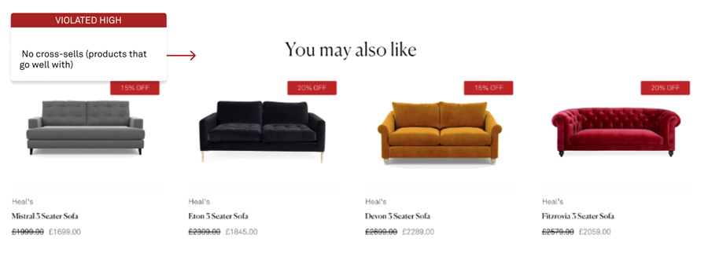

Heal's product page redesign
Heal's is a British furniture retail company comprising seven stores, selling a range of furniture, lighting and home accessories. In 2001, a guide published in association with the Victoria & Albert Museum wrote that for over two centuries Heal's had been known for promoting modern design and for employing talented young designers.
Role
- UX Reserch
- UI
- Mobile and Web Design
Challenge
To impove product page usabilty and increase sales.
Our goal was to create a more user-centric design that facilitates product discovery and encourages users discover and explore products more effectively, leading to increased engagement and conversions.
Design Goals:
The redesign should follow brand design guidelines and styles. The design should be easy to use
and accessible to people with a range of technical abilities.
I used Figma and Photoshop for this project.
The process
I use Baymard's UX Research Methodology and guidelines for this project as well as User Research and Inteviews.
Research
I conducted initial research by leveraging Google Analytics to gain insights into the audience demographics and behaviors on Heal's website.
I used Google Analytics data to identify and select user interview participants, ensuring a diverse representation of the target audience. I conducted in-depth interviews with a total of six participants whose interests aligned closely with the findings from Google Analytics. The participants encompassed a range of profiles, including Green Living Enthusiasts, Cooking Enthusiasts/30 Minute Chefs, Value Shoppers, Health & Fitness Buffs, Home Decor Enthusiasts, and Avid News Readers as well as users with an interest in Travel.
Heal's Customers:

User Interviews
I conducted in-person interviews with selected participants and facilitated a task-based activity where users were asked to locate and add a sofa of their choice to the shopping basket. This hands-on approach allowed for a deeper understanding of user preferences, decision-making processes, and potential pain points in the product search and selection journey.
The task-based activity involved participants using both desktop and mobile devices. By using multiple devices, it enabled the observation of user interactions, preferences, and potential usability issues across different screen sizes and interaction contexts.
Personas
As part of my design process, I developed 2 personas to help me better understand and empathise with the target audience. I created detailed profiles and during user interviews I was able to gain valuable insights into their expectations, concerns, motivations, and behaviours. It helped me to keep the user's needs and goals at the forefront of my thinking.


Key Findings
User interviews uncovered notable issues particularly around product images, shipping information, and financing details. Additionally, several other problems arose in the sessions that hindered users. These will be elaborated on in the following sections.
Overall, the interviews exposed considerable pain points across key aspects of the experience. Addressing these through design interventions will better serve user needs uncovered through the research.
Analysis
The analysis of the page was conducted by applying the Baymard Institute's heuristics, a well-established set of principles and guidelines for evaluating and improving user experience. By leveraging these heuristics, the assessment aimed to identify potential usability issues and areas for enhancement, ultimately ensuring a more user-centered and effective design.
I based the product page analysis on Mistral 3 seater sofa product page, one of the bestselling products.
Product Images
As a crucial aspect of the user experience, the analysis began with an evaluation of the product images featured on the Mistral 3 seater sofa product page. I aimed to assess the quality, presentation of the images to determine their effectiveness in showcasing the product to potential customers. By carefully scrutinizing the product images, we sought to identify opportunities for improvementv to provide users with a more comprehensive and visually engaging representation of the sofa.
Edward Scott for the Baymard instutute points out:
"Research showed that during testing users extended their disappointment when encountered low-quality images for 2 or more products. On the other hand, sites that consistently have high-resolution product images are viewed much more positively by users — the site feels more polished and professional, and users are more confident purchasing products that they feel like they've sufficiently visually investigated. 56% of users' first actions were to immediately begin exploring product images after arriving on the product page."
As a crucial aspect of the user experience, the analysis began with an evaluation of the product images featured on the Mistral 3 seater sofa product page. I aimed to assess the quality, presentation of the images to determine their effectiveness in showcasing the product to potential customers. By carefully scrutinizing the product images, we sought to identify opportunities for improvementv to provide users with a more comprehensive and visually engaging representation of the sofa.
The below practices are adhered to or mostly adhered to on the current prodcut page and ensure a comprehensive and engaging visual experience, enabling users to make informed decisions and establish a connection with the products.
- Product pages include five or more images on average, showcasing the product from multiple angles.
- "In Scale" images are provided, allowing users to quickly understand the product's size and imagine it in their own space.
- Three or more feature callout images highlight specific product features, scale, or inspirational use contexts.
- Page includes product videos, demonstrating features, scale, or inspirational use.
- Most images have descriptions, providing additional information or context.
- At least one lifestyle image is present, helping users envision the product in a real-life setting.
- The site offers a 360-view feature, allowing users to interactively explore the product from different angles.
However there were the following opportunities to better align with UX best practices:
- The usability testing showed that users struggled to find or never found the truncated thumbnail images when presented in a manual carousel below the main image. To improve, I decided to make all the product thumbnail images visible on the product page both on mobile and desktop. This aligns with conventions that clicking an image will enlarge or show more. Showing all thumbnails directly supports the user's product evaluation goals by providing easy access to visual information.
- Currently, the number of supporting images varies inconsistently across product variations. To better meet user needs, the redesign will standardise the image gallery across variations. Each product will include: a lifetsyle, 360 degree video, 5 of cut-out images and an image with detailed dimentions. Standardising image types and quantities will provide users consistent and complete visual information to compare and evaluate products effectively. This supports the key goal identified in research of enabling informed purchase decisions.
- The current product images are not large or high-resolution enough for detailed visual inspection. This hinders users' ability to evaluate the products effectively. Additionally, the only zoom feature is click-based which lacks discoverability. The redesign will incorporate larger, higher resolution product images, in addition to click-based zoom the cursor will change into magnifying glass on hover.
Product Images Section Analysis
Redesigned Product Image Section
Redesigned Product Image Section for Mobile
The Buy Section
User research revealed opportunities to optimise the purchase process:
The below practices are adhered to or mostly adhered to on the current prodcut page and ensure a comprehensive and engaging visual experience, enabling users to make informed decisions and establish a connection with the products.
- The product price was below the fold, lacking visibility. In some tests users were not sure how much the total price was in selected fabric option. Tests also showed that users expected a pop up when product was added to basket with total price visible once added to basket. To address these issues the redesign incorporates total pricing reflecting custom configurations placed more visibly above the fold. I also added the price as a hover over to add to basket button. Confirmation popup was also added with total price visible.
- The Heal's site offers a save feature, but it requires creating an account. There is no visibility into how long items are saved for. Requiring an account creates friction and abandonment. Allowing guest users to save items would better align with user needs.
- Urers noticed that financing options lacked discoverability. Making this more prominent will expand purchase accessibility. I created 0% Credit button under 'Add to basket' to increase visibility of financing that sits above the fold.
- I also observed that the option to order fabric swatches was not discoverable due to poor placement. To address this, the redesign prominently surfaces swatch ordering in multiple locations - in the fabric dropdown, product info section, and at the bottom of the page. Filterign by a particular fabric type was also missing from the fabric selection menu. Keeping our persona Betty in mind I thought it would be useful to add information about Martindale Rub count as well as create filters for Family Friendly fabrics or Spill Resistant ones. I also added filtering by colour makign fabric search easier. And finally, adding a filterign option with Mark's persona sustainability pain point in mind.
- Product variations are interlinked, except for size options. Redesign incudes interlinking different sofa sizes for a more unified experience.
- The fabric and feet options did not expand together. This caused confusion when feet needed to be selected before adding to cart. Expanding both customisation menus together will increase clarity.
- There are 360 and cut-out images for variations, however cut-out images are not updated when different fabric is selected change. I propose to have dynamically updated cut out images when users selects a different fabric option for more consistent experience.
- Heal's has physical stores and sells large, expensive products. However, "Find In Store" or "Click and Collect" options are not visible in the purchase section. I added "See In Store" link under add to cart butting in the buy section to allow users to conveniently view products in stores when needed. Omnichannel integration provides flexibility and convenience when acquiring products.
Current Buy Section

Redesigned Buy Section for Desktop
Redesigned Buy Section Interactions

Redesigned Buy Section for Mobile

Shipping and Returns
User research revealed issues with shipping information discoverability and transparency: users struggled to find shipping costs and details. They expected this information placed more visibly near the add to cart button.
One user called the "hassle-free returns" not truly hassle-free, saying it should transparently indicate upfront that change of heart returns incur a charge, remarking: "it's not even that expensive - would like to see it straight away".
To better meet user needs around shipping transparency, redesign surfaced shipping cost and policy information prominently near add to cart. As well as clearly indicating any associated charges for returns due to change of heart. To improve visibility of shipping details I also moved it up the page and placed together with prodcut details information.
Shipping and Returns Section Analysis
Redesigned Shipping and Returns Section

Product Information
User research indicated the current product descriptions are comprehensive and well-structured:
- Extensive details cover all category-specific information needs.
- Descriptions contain both text blocks and scannable bullet points covering the same items. This caters to different reading preferences.
- Supplementary info like care guides provides useful additional context. One of the users specifically called out the care guide commenting that that information was useful.
- Headlines and subtitles mention key product features upfront. This facilitates quick skimming.
I also noticed the following opportunities for improvements.
- Information about the 10 year frame guarantee was incorporated to the prodcut discription to highlight product durability. This enhancement caters directly to the pain point uncovered in research around Mark wanting assurance of furniture longevity.
- Another Mark's pain point is in identifyign sustainale furniture I have placed information about 10 year guarantee and sustainability at the bottom of the page.
Surfacing relevant details like extended warranties upfront in the descriptions, helps users evaluate how well products fit their needs around sustainability and reducing replacement costs.
By adhering to best practices around thorough, structured, and scannable product detail content, the current descriptions enable users to find the information they need to make informed decisions.
Product Information Section

Redesigned Product Information Section

Specifications Sheet
User tests observations:
- Users found the size line-drawing useful but wanted it shown more prominently with the main content.
- Core specs are covered in both the description and sheet.
- The single column sheet format groups information into logical sections.
- Units of measurement are included next to values for clarity.
Redesigns:
- Redesign surfaced size drawings more prominently.
- Enhanced sheet scannability by alternating row colors would better connect spec labels and values.
Specifications Sheet Section
Redesigned Specifications Sheet Section

User Reviews Section
User tests observations:
- Users searched for reviews but few products currently have them.
- Review submission requires creating an account and asks for personal information.
-
No distribution summary is shown, depriving users of quantitatively interpreting reviews.
Edward Scott in "Ratings Design UX Research" for the Baymard instutute points out:
"When offered, a ratings distribution summary was the most utilised feature of the “Reviews” section during testing — as in, more utilised than the reviews themselves — with 90% of test subjects using the rating distribution summary to analyse the suitability of products to meet their needs. of test subjects relied on the distribution summary."
-
Distribution summaries lack clickable star groupings to filter.
Edward Scott also points out:
Furthermore, of those sites that do provide their users with a ratings distribution summary, 40% don't allow users to click the different star groupings, directly breaking a strong user expectation of the summary also acting as a “star ratings” filter. Product ratings distribution summary at the top of the reviews section allowed users during testing to get a feel for how the product has been rated overall. In fact, the ratings distribution UI was the most utilised feature of the reviews section, and was relied on by users even more than the actual review content.
- No default "Most Helpful" sort exists.
- Heal's currently does not respond to any negative reviews. This could leave users doubtful of customer service.
Redesigns:
- Add graphical distribution summary prominently with clickable star filters. Hide distribution summary when fewer than 5 reviews. Use “or” radio button logic, rather than “and” checkbox logic.
- Implement "Most Helpful" as default sort.
- Add site responses to negative reviews for transparency.
- Adding comfort and quality ratings to redesigned review section enables users like Mark to evaluate how well products align with their priority for ergonomic support and wellbeing. As well as their preference for high-quality, and lasting furniture.
User Reviews Section
Redesigned User Reviews Section

Cross-Sells and Cross-Navigation
User tests observations:
- No separation exists between alternative vs supplementary cross-sells, despite different use contexts.
- Breadcrumbs are hierarchy-based only, lack history-based options from search/listings.
Redesigns:
- I added history-based breadcrumbs from search and listings alongside hierarchy-based ones to the top on the page.
- Created separate section for alternative to distinguish it from supplementary cross-sells.
Cross Sell Section
Redesigned Cross Sell Section
Accessibility
I used Colour Contrast Analyser app to ensure that there is an adequate contrast between elements within the website. This helps users with low vision or those in different lighting conditions to effectively use the website. I tested not only the text but also various UI elements to make sure it was legible.
I used off-white colour from Heal's brand pallette as a background. Research suggests that less contrast in the case of black text on white background as well as white text on black background works better for accessibility as it reduces strain on the eyes
To insure icons in the menu are large enough and easy to click I used frames that are at least 44x44px according to WCAG 2.1.
To make sure the pages were legible for people who are colour blind I used a Figma plugin.
Summary and what's next
Click here to see Heal's Sofa Page redesign in high-resolution. Opens in a new tab.
The user research uncovered notable opportunities to better address core user goals around product evaluation, purchase conversion, and navigation efficiency.
Redesignes addressed the following main pain points:
- Product visualisation and configuration to simplify assessing options bythe users.
- Details around shipping, pricing, and financing to reduce purchase friction.
- Findability of product specifications and sizing information.
- User review summaries and filters.
- More information around sustainability, 10 year warranty and family-friendly options available.
- Separated alternative versus supplementary recommendations to improve cross-sells.
- Made omni-channel options like in-store purchase more prominent.
By aligning more closely to established e-commerce UX guidelines, the next phase will produce solutions validated through iterative user testing. The goal is to eliminate key pain points and create a user-centric experience.